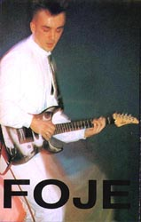

 |
aš čia esu |
Aš čia esu – gyvas grupės Foje albumas, įrašytas grupės dešimtmečio koncerte Vilniaus sporto rūmuose 1993 m. spalio 2 d. Jis buvo išleistas 1994 pradžioje tik kasetėje.
Kai kurios į šį albumą nepatekusios dainos buvo tuo pačiu metu išleistos plokštelėje Aš čia esu (picture disc).
Koncertą stebėjo apie 6000 žmonių.
- Žvakių šviesoje
- Muzika
- Mėnulio veidas
- Žodžių reikšmė
- Aš čia esu
- Arbata
- Ir nieko panašaus
- O, mano saule
- Vieną kartą Paryžiuje
- Amžinas judesys
1 – iš albumo Geltoni krantai
2,3,8 – ankstyvosios dainos, įtrauktos į rinkinį Kitoks pasaulis
5 – iš albumo Žodžiai į tylą
4,9,10 – iš albumo Gali skambėti keistai
6,7 – iš albumo Vandenyje
- Andrius Mamontovas – elektrinė ir akustinė gitaros, vokalas
- Arnoldas Lukošius – vargonai
- Algimantas Kriščiūnas – mušamieji
- Darius Burokas – boso gitara, klavišiniai
- Aurimas Povilaitis (BIX) – perkusija
- VIO - vokalas
- Rimvydas Bučinskas – klarnetas
- Raimondas Trilikauskis – suvedimo garso režisierius (M-1 įrašų studija)
- Raimondas Trilikauskis, Artūras Pugačiauskas, Algis Bajoras, Valdas Karpuška – garso režisieriai
ŽVAKIŲ ŠVIESOJE
aš pasiklydau tarp veidų
keistai dažytų svetimų
o byrantis smėlis delnuose
ar tai dekoracija ar ne
kodėl popieriniai žiedai tikresni
už tikrus
kodėl nupaišyti veidai gyvesni
už gyvus
tiktai žvakių šviesoje
savo veidą aš randu
kaip uždegti tas šviesas
kurios degtų visada
aš savo paslaptį turiu
aš pasislėpęs tarp žmonių
juk jei atsiversiu kaip lietus
kitų akyse vis tiek tai kaukė bus
mėnulio virpančioj šviesoj
aš jūros ilgesį girdžiu
beribė erdvė mažam kambary
viliojantys toliai paties sukurti
MUZIKA
vieną gražų ankstyvą rytą pabudau
ir ilgai žiūrėjau į sieną
kal pro miglą pamačiau
laikrodį kabantį ten
ten dar buvo pora nuotraukų
ir jose buvo mano jaunas veidas
bet tai buvo visai ne tas veidas
kuri aš matau kasdiena veidrody
o tiktai muzika
stabdo laiką keičia žodį
o tiktai muzika
tiktai muzika viena
ir kodėl gi mano nuotraukos
taip klaikiai nepanašios
į mane tokį koks aš dabar esu
išėjau ieškoti atsakymo
užlipau ant aukšto stataus stogo
ten buvo daug daug daug kaminų ir antenų
ir dar ten buvo be galo daug
tokių pat žmonių kaip aš
kurie ieškojo atsakymo
į lygiai tokius pačius klausimus
vienas geras barzdotas dėdė man pasakė berniuk
aš žinau ko tu kasdien taip ieškai
padaryk savo gyvenimą
nepanašų į kitų žmonių gyvenimus
nes jis pas tave vienintelis
MĖNULIO VEIDAS
kam tyrą sapno tylą
tu iš nakties keli
gal tame paguoda yra
juk vienas gyveni
pasaulį tu parodai
ir be ryškių spalvų
taip jis kitoks atrodo
jį tokį aš myliu
geltonas ir šaltas
raudonas ir baltas
tu saulę atstoji
šešėlius pakloji
kai laivas pasiklydęs
supas jūros bangose
jį tamsoje išvydęs
rodai kelią naktyje
man jauną širdį skauda
ir apninka neviltis
kai tavo liudną veidą
dengia debesys juodi
ŽODŽIŲ REIKŠMĖ
auksas tai tavo tikslai
Vilnius laukinių namai
žvaigždės pasauliai kiti
norai tai ką jauti
mirti tai gimti kitur
kristi tai kilti žemyn
meilė tai tavo kančia
niekas visa kas čia
laisvė tu jos nejutai
paukščiai tai laisvės vaikai
himnai tai masių daina
melas tai tavo tiesa
bereikšmių žodžių reikšmė
AŠ ČIA ESU
aš nematomas jūros vėjas
aš mėnulio ryški šviesa
aš ervė ir bekraštis laikas
aš tik taškas tuštumoje
aš aukčiausiai pakilęs paukštis
aš žemiausia žmogaus aistra
aš jau miręs nors dar negimęs
aš esu ir manęs nėra
aš čia esu ir mūsų čia daug
ir jūs kaip aš
ar bus kitaip jei dingsiu iš čia
ar bus kitaip
tu mane sutinki kas dieną
tu manęs niekada nematai
tu nenori pakeisti nieko
tu svajoji gyvent kitaip
tu klausai ką visi tau sako
tu nebetiki jais visais
tu visai nebemyli nieko
tu taip lauki gal kas ateis
mes kartu ir visi po vieną
mes taip vieniši minioje
ir aplinkui visi mums priešai
mes ir patys jiems priešai čia
mes nematom negirdim nieko
mes tik trokštame likt gyvi
mes dar galim kažką ištarti
bet tie žodžiai mums bus tušti
ARBATA
ar tu atsimeni laikus
visas beprotiškas naktis
mūsų negimusius vaikus
aš vis dar matau jų akis
tai buvo keisti keisti laikai
kai mes vis dar žudėme save
ir mūsų begęstantys veidai
atsispindėdavo lange
dabar ant stalo prieš mane
tiktai atšalus arbata
o rankos tyliai uždengia akis
aš noriu būt kažkur toli
nes jeigu liksiu praeity
galiu ir vėl pradėt kartot klaidas
ilga kaip šimtmečiai diena
ilgai bus chaoso pilna
vienatvė tūno visuomet
kažkur arti prie kūno bet
nebūna amžinas ruduo
ir aš tikiu kažkiek dar tuo
silpna pulsuojanti šviesa
tamsaus koridoriaus gale
IR NIEKO PANAŠAUS
skrendant kažkuriame keistam sapne
žemė liko galbūt per daug toli
svajonės ar tu tada matei mane
tai buvo vėl svaičiojimai apie tave
ir nieko nieko panašaus į šį pasaulį
ir nieko nieko kas primintų blogas mintis
ir nieko nieko panašaus į sutryptą meilę
ir nieko nieko panašaus į tavo akis
kai bėgau kai bėgau debesų takais
galbūt atitrūkau šiek tiek per daug
kaip rasti tai kas tęsiasi amžinai
tu leidai o gal ir privertei likt aukštai
O, MANO SAULE
tu ateini debesų kilimais
tu gyveni ten kur paukščių takai
tu negali nesijuokt su vaikais
kur tu eini žydi gėlės laukais
o mano saulę tu mano šviesa
tu žemę sušildai ir sklaidos tamsa
tada kai nuskaidrins
padangę aušra
o mano saule
ateik su diena
būk visada mėlynam danguje
man neramu kai tavęs ten nėra
VIENĄ KARTĄ PARYŽIUJE
tavo nekaltybė man atvėrė vėl
akis į saulę
tavo nekaltybė lyg lietus išplovė
užterštas mintis
tavo nekaltybė šį pasaulį man parodė
vėl iš naujo
tavo nekaltybė atidarė užsitrenkusias
duris
vieną kartą paryžiuj
svaičiojau apie tave
vieną kartą paryžiuj
rytui nušvitus lange
tu sugriovei viską ir po to vėl viską
pastatei iš naujo
tu keistai tylėjai taip keistai kad net
prakalbinai mane
tavo nekaltybė išiliejo ir užvaldė
mano kraują
tavo nekaltybė tartum šėlstanti
palaima pragare
AMŽINAS JUDESYS
mes kilsime vis aukštyn
į juodą žvaigždėtą dangų
tik paukščiai ten mus pasieks
mes klyksime ju balsais
mes mosime sparnais
tai bus mūsų stiprios rankos
mes skrisime aukštyn
kol debesys pasibaigs
aš pamenu kaip kadais
visi mes į žemę kritom
mes nebetikėjom tuo
kad kilsime vėl aukštyn
kaip bangos vandenyje
kaip rytas pakeitęs naktį
mes judam aukštyn žemyn
tai amžinas judesys